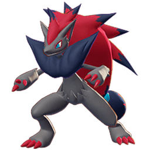
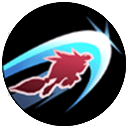
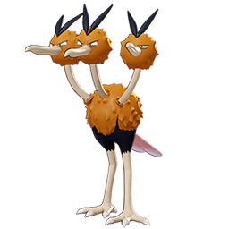
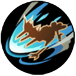

Zoroark
El mejor asesino del juego con capacidad de acabar con equipos eneteros pero siendo su mayor punto debil la cantidad de habilidad que se necesita para manejarlo, esto la da un equilibrio de riesgo vs recompensa.

Durante 2 segundos, cambia el movimiento normal del usuario a ataques de embestida. Después de realizar un ataque de embestida, el siguiente ataque automático del usuario cambia a un ataque único potenciado. Durante la duración del efecto de este movimiento, cada vez que Zoroark golpea a los enemigos con otros movimientos o ataques únicos potenciados, la duración del efecto de este movimiento se restablece a 2 segundos y el usuario puede usar Corte Nocturno de nuevo.

Corre en la dirección designada, infligiendo daño a los enemigos y dejándolos incapaces de actuar durante 0.1 segundos. Si este movimiento golpea a un enemigo cerca del punto final del recorrido, será lanzado durante 0.3 segundos en lugar de quedar incapacitado.
Golpea en la dirección designada, infligiendo daño a los enemigos y restaurando la HP de Zoroark.

Se lanza en la dirección designada, infligiendo daño a los enemigos y restableciendo todos los tiempos de reutilización de movimiento del usuario. Si este movimiento golpea a un enemigo, durante 3 segundos, la ubicación donde comenzó el lanzamiento se marca y el usuario puede usar este movimiento nuevamente, regresando a la ubicación marcada, infligiendo daño a los enemigos.
Dodrio
Este Pokemon es la representacion de velocidad gracias ella puedes confudir y distraer a los oponentes pero esto haciendolo muy vulnerable cuando te caen encima

Dodrio ataca hacia adelante con sus afilados picos varias veces, infligiendo daño a los enemigos alcanzados. Si se usa con el medidor de velocidad lleno, consume el medidor de velocidad y se lanza hacia adelante mientras golpea con sus afilados picos varias veces, infligiendo daño a los enemigos alcanzados y empujándolos. Durante esta embestida, Dodrio recibe un 20% menos de daño.

Dodrio ataca con sus picos en un cono frente a sí mismo, infligiendo daño a los enemigos y aplicando uno de los siguientes efectos aleatorios a los enemigos alcanzados: Quemadura, Parálisis o Congelación.
Se vuelve inmune a los obstáculos durante 0,5 segundos y se añade al medidor de sprint. Después, la velocidad de movimiento aumenta un 20% durante 4 segundos y el medidor de sprint se carga más rápido.

Dodrio salta hacia adelante mientras patea. Si este movimiento hace contacto con un enemigo u obstáculo, Dodrio salta sobre él, aturdiendo a los enemigos por 0.5s, y golpea el suelo al aterrizar, infligiendo daño a los enemigos en el área de efecto, ralentizándolos un 25% durante 2s, y la barra de velocidad se carga un 75%. Si este movimiento hace contacto con un enemigo, ese enemigo queda aturdido brevemente por la patada en la cabeza y el tiempo de reutilización de este movimiento se reduce en 3s.